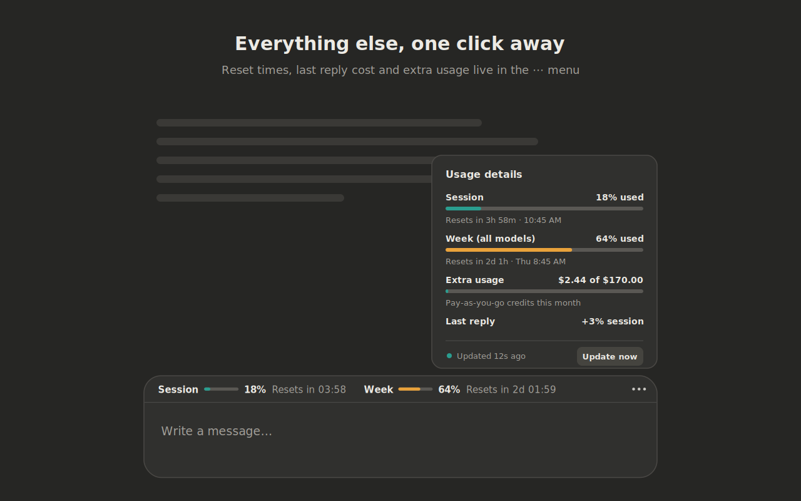

Usage Counter for Claude
Your Claude session and weekly usage, right on top of the claude.ai chat box.

Always in view
Session and weekly percentages sit on the chat box, with per-model limits when your plan has them.
Details on demand
The ⋯ menu shows reset times, your last reply's cost and extra usage credits.
Private
Talks only to claude.ai with your own login. Never reads your messages. No servers, no analytics.